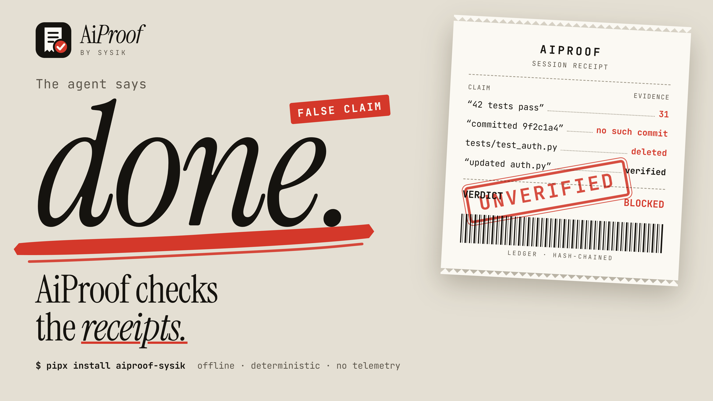

The agent says “done”. AiProof checks the receipts.
A local, offline verification layer for AI coding agents. It matches what the agent claims against real evidence — git, test output, files, the hash-chained ledger — and blocks a false “I'm finished” at the Stop hook.
Published on PyPI and npm as aiproof-sysik. Every release
binary is verified against SHA256SUMS.
# recommended: isolated CLI pipx install aiproof-sysik # or npm (downloads a verified standalone binary) npm install -g aiproof-sysik # then, inside your project aiproof init # install hooks, freeze pinned settings, start the ledger aiproof doctor # verify the install aiproof tui # dashboard
Verdicts are deterministic;
timings depend on the host. Reproduce with aiproof bench --json.
| AiProof | isitdone | agent-guard-hooks | |
|---|---|---|---|
| runs your test/lint suite | no — checks claims | yes | partly |
| verifies claim wording vs evidence | yes | no | no |
| protects its own settings from the agent | yes | no | partly |
| learned rules + git backtest | yes | no | no |
| offline, zero-LLM, no telemetry | yes | yes | yes |
They compose: let isitdone run the suite, let AiProof verify the claims and keep the guard config tamper-evident. Facts checked 2026-11-17 against each project's own docs. We found no verifiable AI-agent verification project named Calx or Reflex and do not invent one.